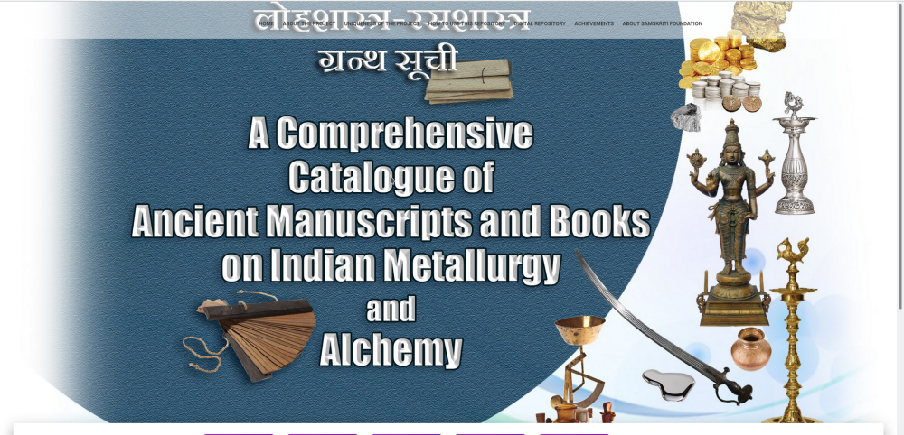
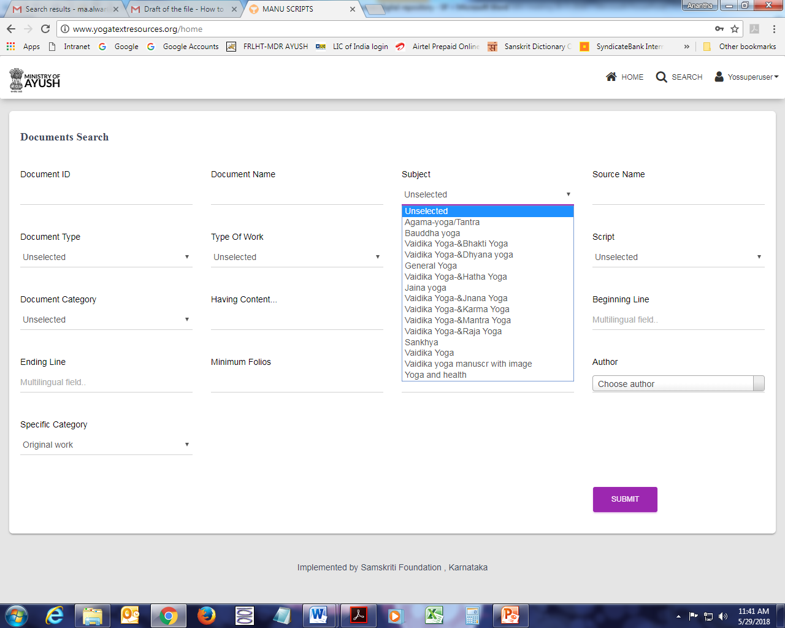
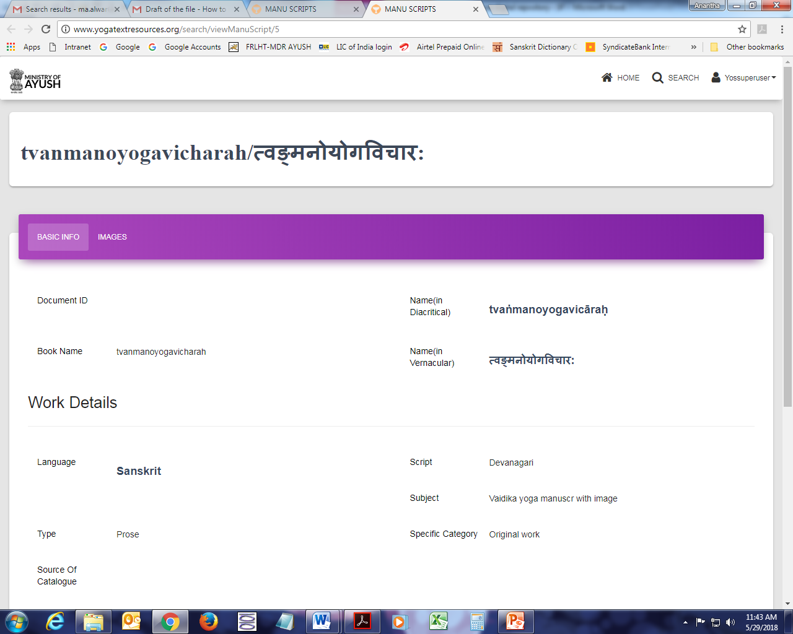
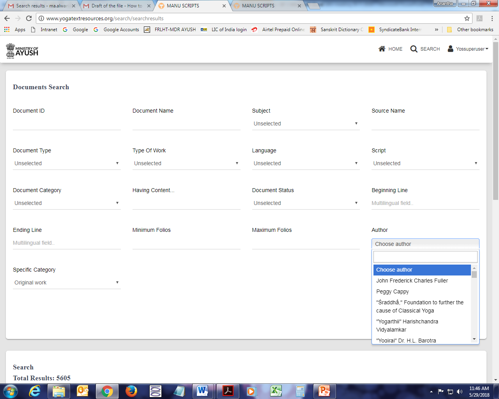
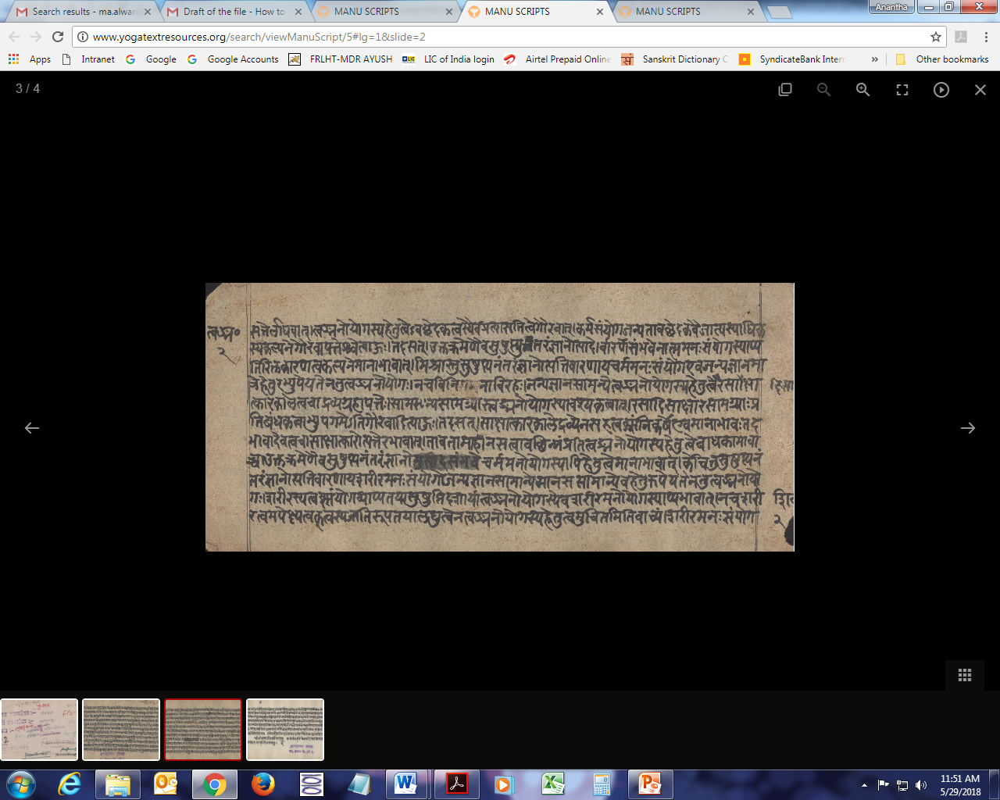

How to use this repository
How to use the Classified, Electronic Master descriptive catalogue and digital repository of manuscripts, books and articles on Indian Metallurgy & Alchemy
When one enter into the website, he / she sees the homepage which very briefly gives the title of the Project. This gives a simple idea of what this is all about. When the user scrolls down a little, he / she able to see the dashboard of the project wherein the total no. of documents is visible as follows:

If a user wishes to use the Classified, Electronic Master descriptive catalogue, he / she should login by clicking on the “Login” button.

If the user is new, then he / she should register himself / herself by filling in the following details:

fter logging in into the repository, one has to click on the :Search” button to access the repository / catalogue. The display screen will have all types of search options like document type, category, status of document, subject etc. Without selecting any specific search category, by clicking ‘Submit’ button it will show all the digitized records on Indian Metallurgy & Alchemy.

To get specific records like books, manuscripts or articles, the user must select the Document type and then click on ‘Submit’ button.
If the user wants to know the manuscripts with particular number of folios then, first document has to be selected and then number of folios should be mentioned in the field ‘Maximum Folios’ and then click on ‘Submit’ button.
The category of ‘Subject’ shows different types of subjects like General Indian Metallurgy & Alchemy, AgamaIndian Metallurgy & Alchemy, Sankhya, VaidikaIndian Metallurgy & Alchemy etc.

If any record is clicked to view at ‘View’ button it will be opened in a new window and the user can see all the details of that particular record. There are two tabs for each record.
One tab shows the ‘Basic Info’ of that particular record/book/manuscript/article.
The other tab shows ‘Images’ of the book/manuscript/article.

If user wants to know the records/books/manuscripts/articles of a particular author, then name of a particular author should be selected first from the list of ‘Author’ and then should click the ‘Submit’ button.

Clicking on the “View Images will enable the viewer to view the thumbnails / images of the book / Manuscript as follows:

Clicking on any of the “thumbails” will lead the User to the following screen where he can view the manuscript in detail with back and forth navigation, zooming in and zooming out and many such other features.

‘Languages’ option will have different types of languages like English, Hale Kannada, Tamil, Telugu, Hindi, Sanskrit etc.
‘Scripts’ will have different types of scripts like Grantha, Sharada, Devanagari, Brahmi etc. ‘Specific Category’ shows records related to Commentary, Sub-commentary, Original work, Translation etc. ‘Type of Work’ contains Poetry, Prose, Compendium, Prose and Poetry.
‘Specific Category’ shows records related to Commentary, Sub-commentary, Original work, Translation etc.
‘Type of Work’ contains Poetry, Prose, Compendium, Prose and Poetry.
Thus, all types of search facilities are available in this repository. User can use all types of options, read, copy the image etc. to do research in the field of Indian Metallurgy & Alchemy.
For more details / queries / feedback and comments, write to samskrti@hotmail.com or contact Samskiti Foundation as per info given in the website. You may click on the link “About Samskriti Foundation” available at the top of the homepage for this purpose
*********